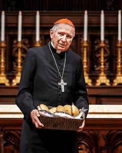

Saint James, Apostle
July 25, 2022
My Brother Archdiocesan Priests:
Over the 37 years I have served in our Archdiocese, I had three separate portrait photos taken. The last two were in the choir dress of a Cardinal. Now as I near the last leg of my own priestly journey, I thought it opportune to have a final photo taken—but this time, one which reflected more fully the gift of the Eucharist and the ministry of Jesus which we share. This photo was meant to harmonize with the call of Pope Francis for us to be humbler, showing compassion and mercy, and being with our people in servant leadership. When I retired, the image of the Unprofitable Servant [Luke 17:7–10] helped to focus me these past years. This is a sample of the new photo:
I already sent a signed an 8 x 10 copy to all the Archdiocesan priests whom I have had the privilege to ordain to the Sacred Priesthood. A few others have inquired about getting a copy, and I would be more than delighted to send signed copy to any Archdiocesan priest who requests one.
Please complete the attached form and return to me. Please indicate how you wish the photo signed, and print that out for me. This will help eliminate errors on my part.
The 8 x 10 photo will be sent, of course, free of charge.
Please know of my prayers and support!
Fraternally yours in Christ,
Cardinal Roger Mahony